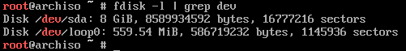
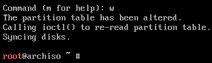

Particionar disco
Como se ha explicado anteriormente, se va usar LVM para evitar crear particiones fijas de tamaños predefinidos. En vez de eso, simplemente es necesario crear tres: el gestor de arranque, la memoria swap y la que contendrá el resto del sistema y cuentas de usuario (esta última cifrada).
El primer paso consiste en averiguar el identificador que se ha asignado al disco duro sobre el que se va a realizar la instalación mediante:
fdisk -l | grep dev
En este caso solo se dispone de un disco duro al que se le ha asignado el identificador sda:

Es importante realizar los cambios sobre el disco correcto en el que se quiere hacer la instalación porque el proceso de particionado elimina todo el contenido previo que hubiera en él.
El comando fdisk también permite gestionar particiones si se le pasa como parámetro un identificador de disco válido:
fdisk /dev/sda
Una vez dentro, los comandos a ejecutar para crear las particiones son:
gcrea una nueva tabla de particiones de tipo GPT.ninicia el asistente para crear una nueva partición.- Pulsar Intro para seleccionar por defecto el número de la partición.
- Pulsar Intro para seleccionar el valor por defecto del sector de inicio (First sector).
+500Mindica el tamaño de la partición (500 MiB en este caso) para quefdiskcalcule el último sector.tpara seleccionar el tipo de partición.1para seleccionar el tipo EFI System.
ninicia el asistente para crear una segunda partición (/boot).- Pulsar Intro para seleccionar por defecto el número de la partición.
- Pulsar Intro para seleccionar el valor por defecto del sector de inicio (First sector).
+500Mindica el tamaño de la partición (500 MiB en este caso) para quefdiskcalcule el último sector.
ninicia el asistente para crear una tercera partición (swap).- Pulsar Intro para seleccionar por defecto el número de la partición.
- Pulsar Intro para seleccionar el valor por defecto del sector de inicio (First sector).
- En este caso hay que indicar un tamaño equivalente al de la memoria RAM del ordenador. Por ejemplo, para 8 GiB hay que poner
+8G. tpara seleccionar el tipo de partición.3para seleccionar la partición.19para seleccionar el tipo Linux swap.
ninicia el asistente para crear una tercera partición (/).- Pulsar Intro para seleccionar por defecto el número de la partición.
- Pulsar Intro para seleccionar el valor por defecto del sector de inicio (First sector).
- Pulsar Intro para seleccionar el espacio restante del disco.
tpara seleccionar el tipo de partición.4para seleccionar la partición.30para seleccionar el tipo Linux LVM.
Tras realizar estos pasos las particiones habrán sido correctamente creadas, aunque los cambios no son efectivos hasta que no se le indica a fdisk que los aplique, por lo que es posible comprobar que todo es correcto antes. La opción p muestra un resumen de los cambios realizados hasta el momento:

Finalmente se aplican los cambios con w y se cierra el asistente:
